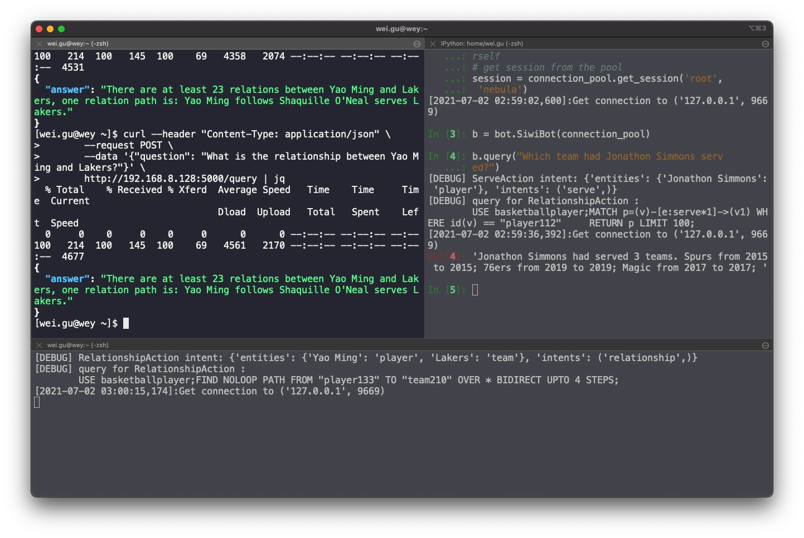
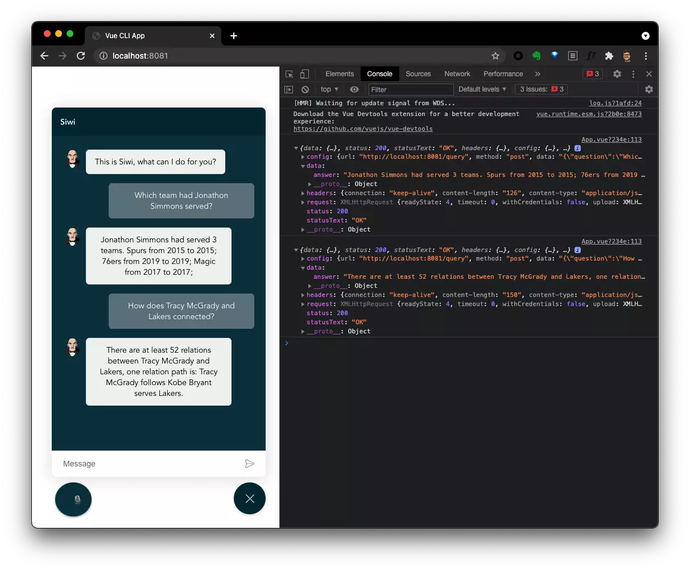

从 0 到 1 打造一个基于图数据库的智能问答助手。
a PoC of Dialog System With Graph Database Backed Knowledge Graph.
Related GitHub Repo: https://github.com/wey-gu/nebula-siwi/
这个项目我也做成了互动教程，可以按照这里的步骤搭建起来 👉🏻 https://siwei.io/cources/
I created the Katacoda Interactive Env for this project 👉🏻 https://siwei.io/cources/
您也可以在 Nebula Playground 上直接玩这个数据集啦：https://nebula-graph.com.cn/demo/
Now you can play with the data on Nebula Playground: https://nebula-graph.io/demo/
Siwi the voice assistant
Siwi (/ˈsɪwi/) is a PoC of Dialog System With Graph Database Backed Knowledge Graph.
For now, it’s a demo for task-driven(not general purpose) dialog bots with KG(Knowledge Graph) leveraging Nebula Graph with the minimal/sample dataset from Nebula Graph Manual/ NG中文手册.
Tips: Now you can play with the graph online without installing yourself!
Nebula Playground | Nebula Playground - China Mainland
Supported queries:
relation:
- What is the relationship between Yao Ming and Lakers?
- How does Yao Ming and Lakers connected?
serving:
- Which team had Yao Ming served?
friendship:
- Whom does Tim Duncan follow?
- Who are Yao Ming’s friends?
Deploy and Try
TBD (leveraging docker and nebula-up)
How does it work?
This is one of the most naive pipeline for a specific domain/ single purpose chat bot built on a Knowledge Graph.
Backend

The Backend(Siwi API) is a Flask based API server:
-
Flask API server takes questions in HTTP POST, and calls the bot API.
-
In bot API part there are classfier(Symentic Parsing, Intent Matching, Slot Filling), and question actors(Call corresponding actions to query Knowledge Graph with intents and slots).
-
Knowledge Graph is built on an Open-Source Graph Database: Nebula Graph
Frontend

The Frontend is a VueJS Single Page Applicaiton(SPA):
- I reused a Vue Bot UI to showcase a chat window in this human-agent interaction, typing is supported.
- In addtion, leverating Chrome’s Web Speech API, a button to listen to human voice is introduced
A Query Flow
1
2
3
4
5
6
7
8
9
10
11
12
13
14
15
16
17
18
19
20
21
22
23
24
25
26
27
28
29
30
31
32
33
34
35
36
37
38
39
40
41
|
┌────────────────┬──────────────────────────────────────┐
│ │ │
│ │ Speech │
│ ┌──────────▼──────────┐ │
│ │ Frontend │ Siwi, /ˈsɪwi/ │
│ │ Web_Speech_API │ A PoC of │
│ │ │ Dialog System │
│ │ Vue.JS │ With Graph Database │
│ │ │ Backed Knowledge Graph │
│ └──────────┬──────────┘ │
│ │ Sentence │
│ │ │
│ ┌────────────┼──────────────────────────────┐ │
│ │ │ │ │
│ │ │ Backend │ │
│ │ ┌──────────▼──────────┐ │ │
│ │ │ Web API, Flask │ ./app/ │ │
│ │ └──────────┬──────────┘ │ │
│ │ │ Sentence ./bot/ │ │
│ │ ┌──────────▼──────────┐ │ │
│ │ │ │ │ │
│ │ │ Intent matching, │ ./bot/classifier│ │
│ │ │ Symentic Processing │ │ │
│ │ │ │ │ │
│ │ └──────────┬──────────┘ │ │
│ │ │ Intent, Entities │ │
│ │ ┌──────────▼──────────┐ │ │
│ │ │ │ │ │
│ │ │ Intent Actor │ ./bot/actions │ │
│ │ │ │ │ │
│ └─┴──────────┬──────────┴───────────────────┘ │
│ │ Graph Query │
│ ┌──────────▼──────────┐ │
│ │ │ │
│ │ Graph Database │ Nebula Graph │
│ │ │ │
│ └─────────────────────┘ │
│ │
│ │
│ │
└───────────────────────────────────────────────────────┘
|
Source Code Tree
1
2
3
4
5
6
7
8
9
10
11
12
13
14
15
16
17
|
.
├── README.md
├── src
│ ├── siwi # Siwi-API Backend
│ │ ├── app # Web Server, take HTTP requests and calls Bot API
│ │ └── bot # Bot API
│ │ ├── actions # Take Intent, Slots, Query Knowledge Graph here
│ │ ├── bot # Entrypoint of the Bot API
│ │ ├── classifier # Symentic Parsing, Intent Matching, Slot Filling
│ │ └── test # Example Data Source as equivalent/mocked module
│ └── siwi_frontend # Browser End
│ ├── README.md
│ ├── package.json
│ └── src
│ ├── App.vue # Listening to user and pass Questions to Siwi-API
│ └── main.js
└── wsgi.py
|
Manually Run Components
Backend
Install and run.
1
2
3
4
5
6
7
8
|
# Install siwi backend
python3 -m build
# Configure Nebula Graph Endpoint
export NG_ENDPOINTS=127.0.0.1:9669
# Run Backend API server
gunicorn --bind :5000 wsgi --workers 1 --threads 1 --timeout 60
|
For OpenFunction/ KNative
1
2
3
4
5
6
|
docker build -t weygu/siwi-api .
docker run --rm --name siwi-api \
--env=PORT=5000 \
--env=NG_ENDPOINTS=127.0.0.1:9669 \
--net=host \
weygu/siwi-api
|
Try it out Web API:
1
2
3
4
5
6
7
8
|
$ curl --header "Content-Type: application/json" \
--request POST \
--data '{"question": "What is the relationship between Yao Ming and Lakers?"}' \
http://192.168.8.128:5000/query | jq
{
"answer": "There are at least 23 relations between Yao Ming and Lakers, one relation path is: Yao Ming follows Shaquille O'Neal serves Lakers."
}
|
Call Bot Python API:
1
2
3
4
5
6
7
8
9
10
11
12
13
14
15
16
17
18
19
|
from nebula2.gclient.net import ConnectionPool
from nebula2.Config import Config
# define a config
config = Config()
config.max_connection_pool_size = 10
# init connection pool
connection_pool = ConnectionPool()
# if the given servers are ok, return true, else return false
ok = connection_pool.init([('127.0.0.1', 9669)], config)
# import siwi bot
from siwi.bot import bot
# instantiate a bot
b = bot.SiwiBot(connection_pool)
# make the question query
b.query("Which team had Jonathon Simmons served?")
|
Then a response will be like this:
1
2
3
4
5
6
7
8
9
10
11
12
13
|
In [4]: b.query("Which team had Jonathon Simmons serv
...: ed?")
[DEBUG] ServeAction intent: {'entities': {'Jonathon Simmons': 'player'}, 'intents': ('serve',)}
[DEBUG] query for RelationshipAction:
USE basketballplayer;
MATCH p=(v)-[e:serve*1]->(v1) WHERE id(v) == "player112"
RETURN p LIMIT 100;
[2021-07-02 02:59:36,392]:Get connection to ('127.0.0.1', 9669)
Out[4]: 'Jonathon Simmons had served 3 teams. Spurs from 2015 to 2015; 76ers from 2019 to 2019; Magic from 2017 to 2017; '
|
Frontend
Referring to siwi_frontend
Further work
- Use NBA-API to fallback undefined pattern questions
- Wrap and manage sessions instead of get and release session per request, this is somehow costly actually.
- Use NLP methods to implement proper Symentic Parsing, Intent Matching, Slot Filling
- Build Graph to help with Intent Matching, especially for a general purpose bot
- Use larger Dataset i.e. from wyattowalsh/basketball
Thanks to Upstream Projects ❤️
Backend
Frontend
Image credit goes to https://unsplash.com/photos/0E_vhMVqL9g